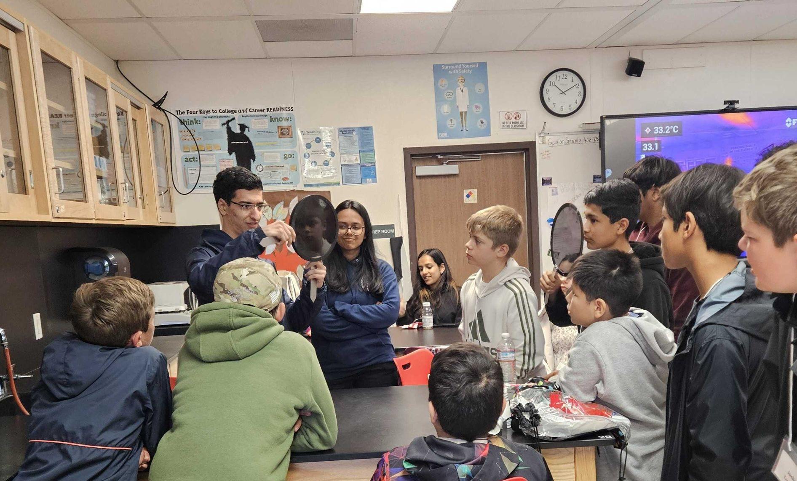

Outreach
 NASA / Reid Wiseman / Artemis II
NASA / Reid Wiseman / Artemis II
Look at her. Just look at her. Think of the mountains. Every mountain we've ever climbed is a wrinkle on her skin. Every deep ocean we have feared and crossed and drowned in is just a shallow layer below her skin. Every civilization we've built, every empire that rose to power and collapsed, from Romans and Babylonians to Mongols and even the ones lost in history, all of it happened here in the last second of her long, indifferent lifetime. And yet, she has not been indifferent. Before we could ask, she gave us food and fruit to eat. She gave us water to drink and air to breathe. She gave us a world with everything we would ever need.
Somewhere in some pixels a child is being born. In another, a man is dying alone in a room. Somewhere, a couple is falling in love, and somewhere else, a refugee is staring at a horizon. Somewhere, a scientist is on the edge of a discovery. Somewhere, someone is laughing so hard they can't breathe. And, somewhere, someone is crying about losing a loved one. All of it. All of it is happening here, on this mote of dust in the vastness of space, on a planet that from the right distance fits behind your thumb.
What does it mean to wage a war on one another? To become the temporary master of a fraction of a dot? Think about it. On this fragile, small, spinning thing, we drew lines in the soil and said, "This side is mine, and you are not welcome here." We gave names to the rivers and turned the names into reasons for killing one another. We used cloth to make flags and bled for the cloth as if the cloth could love us back.
She has watched it all. Century after century. Every burning village. The rise and fall of every empire. And not one of those empires took the sky with them when they fell. Not one of those borders outlasted the river it was drawn next to. Everything we claimed returned to her, and she generously gave it, unnamed and unheld, to whoever came next. She has always known something that we keep having to relearn: that nothing here was ever ours to keep. We were always just guests.
Photo: NASA / Reid Wiseman, Artemis II · Words: Arian Moghni
On Purpose
Why Any of This Matters

Outreach event with community students.
I grew up in Iran, in a country where the language of science was not always the language people spoke at home, where access to the kind of knowledge that changes lives was unevenly distributed, and where the distance between a curious child and a research university felt vast. That distance is not unique to Iran. It exists in every city, in every language, wherever a young person looks at the night sky and has no one to tell them that the sky is a question they are allowed to ask.
Science communication is not a footnote to research. It is the reason research matters to anyone beyond the people doing it. The most precise measurement, the most elegant theory, the most careful observation, all of it is diminished if the circle of people who benefit from it stays small. I believe that circle should be as wide as the sky we study. That belief is not abstract for me. It drives every talk I give, every post I write, every student I mentor. It is the thread that connects my work at Johns Hopkins to a teenager in Tehran reading a post in Farsi at midnight, to a high school student in Santa Cruz who did not know that people like her became astronomers.
I want to close gaps. Between languages. Between communities. Between curiosity and opportunity. That is what this page is about.
Science Communication · Since 2022
NASA Farsi IR: Breaking the Language Barrier

A sample of posts from @nasa_farsi_ir, where research findings and astronomy fundamentals are explained in Farsi for a global Persian-speaking audience.
In February 2022, I started managing and writing for NASA Farsi IR on Instagram, an account that translates new research findings and astronomy and physics fundamentals into Farsi for Persian-speaking audiences around the world. Over 1,300 posts later, the account has accumulated more than 500,000 combined views on Instagram and LinkedIn in a single year.
The goal was simple but felt urgent: the most exciting science in the world was being published in English, discussed in English, celebrated in English. But hundreds of millions of Farsi speakers, including many with deep curiosity and talent, had no access to it in their own language. I wanted to change that, one post at a time.
The account covers everything from the daily discoveries of NASA missions to the physics of how stars are born and die, the history of the solar system, and how astronomers measure distances across the universe. In the summers, I have hosted live international meetings discussing stellar evolution, the history of the solar system, and future space missions, bringing together Persian-speaking audiences from Iran, Afghanistan, the diaspora, and beyond for real conversations about science.
Science Writing · Published February 2026
The Spectrum: A Key to Understanding the Universe

Griffith Observer magazine, February 2026. My article "The Spectrum: A Key to Understanding the Universe" appears in this issue.
In March 2025, I was awarded 4th Prize in the Joan and Arnold Seidel Griffith Observer Science Writing Contest, making me the only undergraduate winner among international university faculty and professional science writers. The jury described the winning entries as the "best articles in astronomy, astrophysics, and space science" that stimulate "the flow of information between scientists, science writers, and the public."
The article, published in the Griffith Observer in February 2026, uses the spectrum as a lens through which to explain how astronomers read the universe. Light, when broken apart, becomes a language. Every star, every galaxy, every cloud of gas in the void between worlds has a story written in wavelengths, and the spectrum is the key to reading it. The article was written to be accessible to anyone curious about how we know what we know about the cosmos.
Writing for a general audience is a discipline I take as seriously as any technical skill. To explain something clearly, you have to understand it deeply. And to make someone care, you have to remind them why it matters to them. That is the work.
Mentoring · Ongoing
Mentoring: Widening the Circle
A networking event hosted through the UC Santa Cruz Physics Mentoring Program.
The most direct form of outreach is a conversation. I have tried to have as many of those as possible.
As Program Lead of the UC Santa Cruz Physics Mentoring Program, I connected 96 mentors and mentees across the department, building a structure where undergraduates interested in physics and astrophysics can find support for graduate school applications, summer REU programs, coursework, and research. I host networking events that put students in the same room as researchers, creating the kinds of informal connections that often determine whether someone stays in the field.
Through the Young Voyagers Mentoring Program, I work with high school students from underserved communities in physics, astronomy, college applications, and scholarships. One of my mentees received a full-ride to the University of Pennsylvania. Another was accepted to Case Western Reserve University as an international student. A third is currently a senior preparing to apply. These outcomes matter more to me than almost anything else I have done.
I also volunteer as a tutor with the Learn To Be Organization, teaching AP Calculus AB, AP Physics 1, Honors Algebra 2, and Geometry to middle and high school students from underserved communities. And at UC Santa Cruz, I served as a research peer mentor for four first-year undergraduates in an introductory research class, guiding them through data analysis, computational tools, scientific writing, and presenting their findings.
I led a college application workshop at Harbor High School in Santa Cruz, because the paperwork and process of applying to college should not be a barrier that talent cannot cross.
96 mentors and mentees connected across physics and astrophysics
High school students from underserved communities; 3 mentees placed at top universities
AP Calculus AB, AP Physics 1, Algebra 2, and Geometry for underserved students
Guided 4 first-year undergraduates through HST and JWST data analysis
Leadership & Public Talks · Ongoing
Bringing Physics Into the Open

UC Santa Cruz Society of Physics Students.
As President of the UC Santa Cruz Society of Physics Students (SPS) since September 2023, I have tried to make physics feel like something that belongs to everyone. I led the university-wide research showcase connecting undergraduates with physics and astronomy faculty. I hosted graduate school and REU workshops to demystify what comes after a bachelor's degree. I raised over $5,500 in funding and led outreach events for community college and middle school students.
I have given public talks under the "No Jargon" format at UC Santa Cruz, including one called Galactic Rain and the Death of Galaxies and another called A More Accurate Period for Variable Stars, both designed to make active research accessible to audiences with no background in astrophysics. I have also spoken at Foothill High School in Pleasanton about galaxy evolution, and at the Leadership Alliance National Symposium, reaching audiences far beyond the university.
I believe that every talk given outside a conference room is a small act of democratization. The discoveries that happen in universities belong to the public that funds them and the world that they are about. Getting those discoveries out of the seminar room and into ordinary conversation is work I find genuinely urgent.

Physics outreach with middle school students.

Hosted a graduate school workshop for undergraduates at UC Santa Cruz.